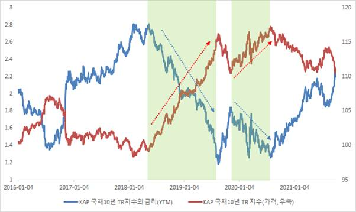
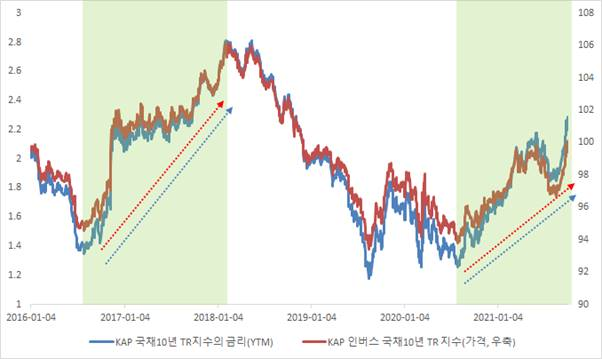
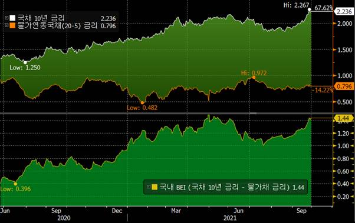
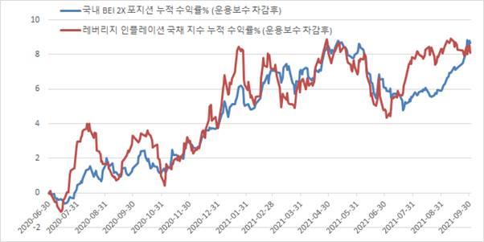
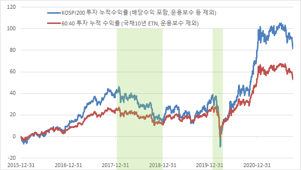
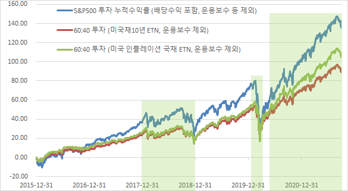
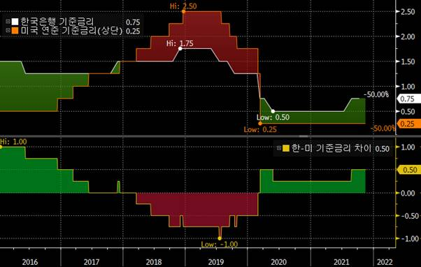
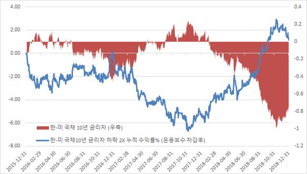
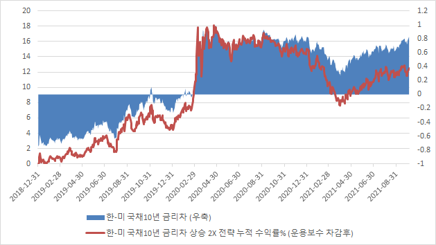

FAQ
ETN궁금증을 빠르게 해결해 드립니다.
-
Q 거래량이 작아 보이는 종목들은 투자하기 망설여집니다. 투자해도 괜찮을까요?
메리츠 증권에서 유동성 공급(LP)을 위하여 직접 매수와 매도 호가를 제공하고 있으며,
거래량이 적더라도 LP 호가가 촘촘하거나 두텁다면 거래하시는데 문제가 없습니다. 따라서 단순 거래량보다는 장중 LP 호가 현황을 보시기를 권장 드립니다.다만 장중 LP의 매수 호가가 매도 호가보다 더 적은 경우가 있는데, 이는 투자자들이 매수한 수량보다 더 많은 매수 호가를 입력할 수 없기 때문입니다.
투자자의 매수가 증가하면 그 수량만큼 LP의 매수 호가도 증가하게 되므로, 실제 거래에 있어 불편함은 없으실 것입니다.특정 규모 이상의 경우 (예: 10억원 이상) 주식 시장에서 매도하지 않고, 중도 상환 신청을 통하여 현금화 하실 수 있습니다.
단 별도의 수수료가 발생하며, 중도 상환과 관련된 세부 내용 및 장중 LP의 호가 스프레드와 의무 관련하여 각 종목의 투자설명서를 확인하여 주시기 바랍니다. -
Q 채권형 ETN의 가격은 금리가 상승하거나 또는 하락할 때 각각 어떻게 변하는지 궁금합니다.
-
인버스형이 아닌 일반 국채 ETN의 가격이 상승하는 경우는 통상 기초자산인 국채의 금리가 하락할 때입니다.
채권의 특성상 만기가 긴 (고정금리) 채권일수록 금리가 상승할 경우 채권 가격은 하락, 금리가 하락할 경우 채권 가격은 상승하는 경향이 있기
때문입니다.아래 그림은 국채 10년 금리와 메리츠 국채 10년 ETN의 기초지수(KAP)를 비교한 것입니다.
금리 하락시 ETN의 기초지수가 상승하는 것을 확인하실 수 있습니다.금리 하락시 ETN 기초지수 상승
-
반대로 금리가 상승하는 경우에는 통상 국채 인버스형 종목의 가격이 상승하게 됩니다.
아래 그림은 국채 10년 금리와 메리츠 인버스 국채 10년 ETN의 기초지수(KAP)를 비교한 것입니다.
금리가 상승하는 국면에서 인버스형 지수의 가격이 상승하는 것을 확인하실 수 있습니다.금리가 상승하는 국면에서 인버스형 지수 가격 상승
-
다만 채권은 일반적으로 이자 수익을 제공하여 이는 매일의 ETN 지표가치에 포함이 되며, 인버스형 종목의 경우는 담보채권이나 차입 비용에 따라
오히려 비용이 발생할 수 있습니다.
따라서 중기 혹은 장기 성과에서 단순 금리 방향과 기초지수 가격의 방향이 일치하지 않는 경우가 발생할 수 있으며,
위 기초지수 가격에는 또한 해당 ETN의 제비용(운용보수)이 반영되어 있지 않습니다. 관련하여 자세한 내용은 각 기초지수의 룰북 및 해당 종목의 투자설명서를 참고하시기 바랍니다.
-
-
Q 기대 인플레이션으로도 활용되는 B.E.I (Break-even Inflation)에 투자하는 방법은 없나요?
물가연동국채는 매수하는 금리에 추가적으로 물가상승률에 연동된 수익(원금 및 이자 금액에 연동)을 발행자인 국가(정부)로부터
받을 수 있는 상품입니다. 국내 물가연동국채는 10년 만기로 2년마다 새롭게 발행되는데, 이론적으로 시장이 효율적이라면 동일 발행자인 국가가 발행하는 일반 국채 10년물을 투자하는 것과 동일한 투자 수익을 얻게 될 것입니다.이를 식으로 나타내면 아래와 같습니다.
국채 10년 금리 = 물가연동국채 10년 금리 + 물가상승률(향후 10년간 연평균)
그러나 향후 10년간 연평균 물가 상승률을 현재 시점에서는 알 수 없기 때문에 여기에는 기대 및 전망이 반영됩니다.
따라서 식을 다시 쓰면 아래와 같습니다.국채 10년 금리 = 물가연동국채 10년 금리 + 향후 10년간 예상되는 연평균 물가상승률
그런데, 위 식은 이렇게 바꿀 수 있습니다.
향후 10년간 기대 인플레이션 = 국채 10년 금리 – 물가연동국채 10년 금리
즉 [국채 10년 금리 – 물가연동국채 10년 금리] 차이를 경제학적으로 흔히 기대 인플레이션을 측정하는 지표로 활용하며,
물가연동국채의 B.E.I (Break-even Inflation) 이라고도 부릅니다. (경제학의 피셔 방정식과도 같은 내용입니다)한편, 물가연동국채에 투자할 경우 인플레이션이 올라갈수록 그에 연동된 수익을 얻을 수 있으나,
위와 같은 경우라면 단순히 물가연동국채에만 투자하는 것보다 B.E.I 상승에 투자하는 것이 더 좋은 수익률을 나타낼 수 있습니다.
장기 채권인 만큼 물가연동국채 자체 금리가 상승할 경우 채권 가격이 하락하여 자본 손실이 발생할 수 있습니다.
만약 향후 물가 상승률이 높아질 것이라는 기대감이 확대되면서 B.E.I가 상승하는 경우라고 하더라도, 이는 국채 10년 금리가 더 크게 상승하여 발생하는 경우일 수 있으며, 이러한 때에는 물가연동국채에 대한 단기적인 투자 수익률이 기대에 미치지 못할 수 있습니다.
B.E.I 투자 방법은 물가연동국채를 매수하고 국채 10년물을 (대차)매도하는 것인데, 메리츠 ETN 중 2개 종목을 동시에 매수하여 구현이 가능합니다.전략 매수 종목 (1) 매수 종목 (2) 국내 B.E.I 메리츠 인플레이션 국채 ETN 메리츠 인버스 국채10년 ETN 미국 B.E.I 메리츠 미국 인플레이션 국채 ETN(H) 메리츠 인버스 미국채10년 ETN(H) 미국 B.E.I 2X 메리츠 레버리지 미국 인플레이션 국채 ETN(H) 메리츠 인버스 2X 미국채10년 ETN(H) 1X와 2X간, 그리고 국내와 미국간 교차하여 더 다양한 조합으로도 투자가 가능합니다
현재 국내 물가연동국채 지표물인 물가20-5 종목이 발행된 2020년 6월부터 2021년 9월말까지 금리 및 B.E.I 추이는 아래 그림과 같습니다.
2020년 6월말 이후 2021년 4월까지 BEI는 약 0.4%에서 1.4% 수준까지 크게 상승했는데, 이는 물가연동국채 금리의 하락보다 국채 10년 금리의 상승에 기인한 부분이 더 컸습니다.위와 같은 기간에 [국내 B.E.I 2X 전략]으로 메리츠 레버리지 인플레이션 국채 ETN과 메리츠 인버스 2X 국채10년 ETN을 동시에 매수했을
경우를 가정하여 수익률을 산출할 수 있습니다.
(해당 기간에 각 ETN 상장 전이므로, 기초지수 수익률에 ETN의 운용보수를 차감하여 계산)메리츠 레버리지 인플레이션 국채 ETN에 단독으로 투자하였을 경우와 [국내 B.E.I 2X 전략]으로 투자했을 경우 모두 해당 기간 8%대의
수익률로 큰 차이는 나지 않습니다. 다만 2021년 하반기에 괴리가 발생하는데, 두 투자 방식 각각의 누적 수익률 추이는 아래와 같습니다.2021년 3분기 중에 시장의 기대 인플레이션으로 볼 수 있는 B.E.I는 0.4%p 가량 상승했는데 반해,
레버리지 인플레이션 국채 ETN에 단독으로 투자했을 경우의 수익률은 큰 변동이 없습니다. 이는 물가연동국채의 금리는 대체로 유지되는 가운데,
국채 10년 금리가 가파르게 상승했기 때문으로, 이러한 시장 상황에서는 [국내 B.E.I 2X 전략]으로 투자하는 것이 더 좋은 성과를 기록했습니다.다만 위의 사례에서 볼 수 있듯이 국채 10년 금리와 B.E.I 변화 등에 따라 각각의 투자 방식이 서로 다른 성과를 보일 수 있습니다.
이에 유의하시어 투자 방법 및 시기를 선택하시기 바랍니다. -
Q 채권형 ETN은 언제 어떻게 투자하면 좋은가요?
-
(1) 금리 방향에 따른 기본적 투자 접근
기초자산 채권의 금리가 하락할 것으로 예상하거나 또는 큰 변동이 없을 것으로 예상하여 꾸준한 이자 수익을 기대하는 경우는
정방향 및 레버리지형 상품에 투자를, 반대로 금리가 상승할 것으로 예상하는 경우에는 인버스형 또는 인버스 2X형 종목에 투자를 하시는 것이
기본적인 접근 방법입니다.
(Q2의 내용을 참고하시기 바랍니다.) -
(2) 자산배분 관점에서의 접근
금융자산을 100% 주식에 투자하는 것은 큰 변동성에 노출되기 때문에 자산배분은 필수적인 것으로 여겨지고 있습니다.
대표적인 분산투자 대상은 바로 채권, 특히 국채이며 소위 60:40 포트폴리오로 불려지는 배분 방식이 대표적인데 주식에 60%, 채권에 40%를 투자하는 것입니다.국채는 대표적인 안전자산으로서 기본적으로 이자 수익을 제공할 뿐 아니라,
위험자산인 주식 가격이 하락할 때 안전자산 수요가 확대되어 손실을 방어하는 역할을 기대할 수 있습니다.아래 그림은 2016년 이후 KOSPI200에만 투자한 것과,
60%만 KOSPI200에 투자하고 국채10년에 40%를 분산 투자했을 경우의 누적 수익률 추이입니다.
2018년 미국의 금리인상과 미중 무역분쟁이 격화되던 당시 주식의 수익률이 크게 둔화된 반면
자산배분(60:40) 투자의 경우 변동성이 제한적인 것을 보실 수 있습니다. 2020년초 코로나19의 대유행이 시작되던 시기 또한 마찬가지입니다.한편 2021년 하반기 기준, 인플레이션 위험이 확대되면서 국채 금리의 상승 가능성이 주식의 약세 요인으로 꼽히기도 합니다.
이에 전통적 방식의 60:40 포트폴리오 대신 다른 방안이 제기되곤 하는데, 일반 국채 대신 물가연동국채를 투자하는 방식이 대표적입니다.
인플레이션에 민감한 해외 주요 연기금의 경우 물가연동국채 투자 비중이 이미 높은 상황이기도 합니다.아래 그림은 미국 투자의 경우로서 환헤지를 가정하고, 1) S&P 500 지수에 전부 투자했을 경우와 2) 메리츠 미국채10년 ETN(H)에 40% 투자했을 경우,
3) 메리츠 미국 인플레이션 국채 ETN(H)에 40% 투자했을 경우의 누적 수익률 추이를 각각 비교한 것입니다.미국의 경우에도 2018년과 2020년초 60:40 자산배분 포트폴리오가 상대적으로 수익률 방어에 효과적이었습니다.
그런데 2020년 중반 Pandemic 대응을 위한 재정 및 통화 정책의 동시 확장으로 인플레이션 압력이 커지면서 미국채10년 대비 물가연동국채(TIPS, 메리츠 미국 인플레이션 국채 ETN)에 분산 투자했을 경우의 수익률이 더 높음을 확인할 수 있습니다.이와 같이 메리츠 채권형 ETN을 자산배분 관점에서 투자하실 수 있습니다. 위의 사례에서는 정방향의 국채, 미국채 10년 및 인플레이션 국채만을 비교했으나, 다양한 만기의 상품 및 레버리지 혹은 인버스형 종목까지도 시장 상황에 맞게 활용할 수 있습니다.
-
(3) 상대가치 투자 등 다양한 전략 구사
또한 여러 채권형 ETN의 조합을 통한 다양한 투자도 가능합니다.
위의 Q3에서 소개해드린 B.E.I 전략도 2개 ETN의 조합을 활용한 투자 방법이었습니다. 다음으로는 채권 트레이더들이 주로 활용하는 상대가치 전략 중 하나인 [한국-미국 국채 10년 금리차] 전략에 대해 소개 드리고자 합니다.미국의 연방준비은행(이하 연준)은 미국의 정책금리를 결정하는 기관이며, 한국은행을 포함한 주요국 중앙은행들 또한 연준의 결정에 큰 영향을 받습니다. 그러나 각 국가별 경제 상황 및 정책 환경에 차이가 있으므로 통화정책에는 차이가 발생할 수 밖에 없습니다.
이 차이가 각 국가별 국채 금리 차이로 연결되는데, 미국 연준과 한국은행의 통화정책 차이와 그에 따른 국채 금리차 변화를 활용한 투자를 할 수 있습니다.아래 그림에는 2016년 이후 한국과 미국의 중앙은행이 결정하는 기준금리 및 기준금리 차이의 추이가 그려져 있습니다.
한국은행은 2016년에 기준금리를 한차례 인하한 반면, 미국 연준은 2016년 말부터 기준금리를 인상하기 시작하면서 한국-미국 기준금리차는 +1.0%p에서, 2018년말 미국이 마지막 금리 인상을 실시했을 당시 -0.5%p까지 빠르게 내려오게 됩니다.만약 위와 같은 상황을 예상하였다면,
국내 국채 10년 금리보다 미국채 10년 금리가 더 많이 상승하는 것에 대한 투자를 고려할 수 있습니다.
금융기관의 채권 트레이더라면 국채 10년을 매수하고, 미국채 10년을 (대차) 매도하는 전략(환헤지 실시)을 취했을 것입니다.
메리츠 채권형 ETN으로도 2개 종목을 활용하여 동일한 전략을 구사할 수 있습니다.전략 매수 종목 (1) 매수 종목 (2) 1) 한-미 국채10년 금리차 하락 메리츠 국채10년 ETN 메리츠 인버스 미국채10년 ETN(H) 2) 한-미 국채10년 금리차 하락 2X 메리츠 레버리지 국채10년 ETN 메리츠 인버스 2X 미국채10년 ETN(H) 3) 한-미 국채10년 금리차 상승 메리츠 인버스 국채10년 ETN 메리츠 미국채10년 ETN(H) 4) 한-미 국채10년 금리차 상승 2X 메리츠 인버스 2X 국채10년 ETN 메리츠 레버리지 미국채10년 ETN(H) 위의 표에서 2)번 전략을 위해 메리츠 레버리지 국채10년 ETN과 메리츠 인버스 2X 미국채10년 ETN(H) 종목을 동시에 매수를 할 수 있으며,
2015년 말에 투자를 했을 경우의 수익률 추이는 아래 그림처럼 그릴 수 있습니다.
(해당 기간 각 ETN 상장 전이므로, 기초지수의 수익률을 기초로 계산하였습니다. 또한, 해당 ETN의 운용보수를 차감하여 실제 투자 수익을 구현하였습니다.)그런데, 위 그림에서 보시면 해당 투자의 3년간 순수익률은 1%도 채 되지 않습니다.
오히려 투자 직후 2년간은 -6% 수준의 손실을 기록합니다. 이는 장기 국채인 10년 금리가 기준금리와 반드시 같이 가지 않는다는 것을 시사하며, 따라서 장기 국채 금리 전망을 위해서는 반드시 다른 요인들도 고려해야 합니다.우선 단순하게 2016년 초의 한국과 미국의 국채 10년 금리차를 보면 (기준금리 차이가 +1.0%p 였음에도 불구하고) 0 부근에 머물고 있습니다.
즉, 기준금리 차이를 고려할 때 국채 10년 금리가 미국채 10년에 비해 상대적으로 이미 낮은 상황이었기 때문에 적절한 투자 시기가 아니었을 수 있습니다.하지만 2017년 후반의 상황을 보면, 한-미 기준금리 격차는 거의 없는데 반해 10년 국채 금리 차이는 (+)로 한국의 국채 금리가 상대적으로 높았습니다.
만약 이 상황을 포착하여 동일한 투자를 시작하였다면, 약 1년간 7%가 넘는 수익을 기록하였을 것입니다.반대의 경우도 있습니다.
2018년 말에 연준이 마지막 금리 인상을 마친 후에 미국채 10년 금리는 하락세로 전환하였고,
2019년에는 금리 인하를 시작한 이후 2020년 초에 코로나 바이러스 확산으로 인해 다시 제로 금리까지 인하하였습니다. 이 시기에 위 표의 4)번 투자를 실시했다고 가정하고 운용보수 차감후의 수익률을 그리면 아래의 그래프가 됩니다.
(메리츠 인버스 2X 국채10년 ETN과 메리츠 레버리지 미국채10년 ETN(H)를 동시에 매수)만약 2018년말에 해당 투자를 시작했다면, 1년 후에는 약 7%의 수익을 기록하고 코로나 발생으로 인한 글로벌 금융시장 충격이 발생했을 당시에는 최대 18%의 수익까지 기록했을 것입니다.
다만 이 또한 과거 사례로 메리츠 채권형 ETN을 활용한 다양한 투자 방법을 소개드리기 위한 것일 뿐,
과거 성과가 미래 수익률을 보장하지 않음에 유의하여 주시기 바랍니다.
-
(1) 금리 방향에 따른 기본적 투자 접근
-
Q 메리츠 ETN은 메리츠증권 계좌가 있어야만 거래 가능한가요?
아닙니다.
ETN은 ETF와 동일하게 주식 시장에 상장되어 거래되므로, 모든 증권사의 계좌를 통해 거래가 가능합니다.
단 개별 증권사마다 ETN 거래를 위해 투자성향진단 등을 별도로 요할 수 있습니다.
또한, 레버리지형 종목의 경우 처음 투자하실 때 금융투자교육원의 별도 교육을 이수하셔야 하며 기본예탁금이 적용되니,
해당 거래 증권사에 확인하시기 바랍니다. -
Q 채권형 ETF에 비해 제비용(운용보수)이 높은 것 아닌가요?
ETF와 ETN의 차이점 중 하나는
ETF는 운용실적에 따라 수익률이 정해지는데 반해, ETN은 기초지수 수익률을 동일하게 추종한다는 점입니다.따라서 ETF 투자시 운용보수 외에도,
ETF 내에서 발생하는 거래비용 등으로 인해 실제 운용실적이 기초지수를 따라가지 못하는 경우(추적오차)가 있습니다.그러나 ETN은 ETF와 달리 눈에 보이지 않는 별도의 비용이 없으며,
제비용(운용보수)에 발행사의 헤지거래(해외형의 경우 환헤지 포함) 비용을 포함한 모든 제반 비용이 모두 반영되어 있어
단순히 눈에 보이는 비용은 ETN이 더 높아 보일 수 있습니다. -
Q 미국채 또는 미국 TIPS에 투자하는 ETN의 경우 미국에 상장된 ETF와의 주요한 차이점은 뭔가요?
기본적으로 기초자산인 미국채 또는 물가연동국채인 TIPS의 수익에 연동된다는 점에서는 동일하지만,
크게 다음과 같은 세가지 차이점이 존재합니다.-
(1) 첫째, 거래 시간의 차이
미국 ETF는 뉴욕 증시에서 거래되므로 한국 시간으로는 늦은 밤 또는 새벽에 거래해야 합니다.
그러나 메리츠 ETN의 경우는 한국 주식 시장에서 거래하실 수 있습니다. -
(2) 둘째, 환전 필요 유무
미국 ETF를 거래하실 때 미국 달러화가 필요하며 따라서 별도의 환전 비용이 발생할 수 있습니다.
또한, 환율 변동에 따라 투자 수익이 영향을 받으므로 환헤지를 하시는 경우 또한 별도의 비용이 발생합니다.
그러나 메리츠 ETN은 미국 자산에 투자하면서도 원화로 거래하기에 환전 비용이 발생하지 않고, 환헤지 종목(H)의 경우 환 변동으로부터 영향을 받지 않습니다. -
(3) 셋째, 과세 방식
국내 ETN의 경우 배당소득세 과세(15.4%)인데 반해, 미국 상장 ETF는 분배금과 매매차익에 각기 다른 과세 방식이 적용됩니다.
ETF의 분배금에는 동일하게 배당소득세가 과세(15.4%)되지만, 매매차익에 대해서는 양도소득세가 과세(22%, 분리과세)됩니다.
또한 ETN은 증권거래세가 면제인 반면, 미국 상장 ETF는 별도의 증권거래세가 부과됩니다.
-
-
Q 미국채나 TIPS 가격을 추종하는 ETN 가격은 한국 시간에도 변동이 있나요? 미국이 휴장일 경우 거래에 문제는 없나요?
미국채는 대표적인 글로벌 (안전)자산으로,
선물(Futures)을 포함하여 한국 시장(아시아 시장) 및 유럽 시장에서도 활발하게 거래됩니다.
이에 한국 시간에서도 당연히 금리 및 가격 변화가 발생하며 해당 ETN의 실시간 지표가치(IIV)에 반영되고,
유동성 공급(LP) 호가 및 ETN 가격에도 영향을 미치게 됩니다.다만 미국 시장에서 미국채 및 TIPS의 거래량이 가장 많은 만큼,
금리 및 가격은 미국 시간에 상대적으로 크게 움직이는 경향이 강하며, 이 경우 다음 날 아침 한국 시장의 ETN 가격에 반영됩니다.한편 미국이나 일본이 휴장일 경우, 미국채 거래가 없어 한국 장중에 실시간 지표가치(IIV)가 움직이지 않을 수 있습니다.
그러나 미국채 선물 시장이 열린 경우라면 유동성 공급 호가는 해당 선물 가격에 연동하여 변동되어,
미국 휴장 여부와 관계없이 국내 시장에서 원활히 거래하실 수 있습니다. -
Q 주식과 달리 기초자산이 채권인 경우 금리 수준이나 움직임, 동향을 파악하는데 어려움이 있습니다. 어떻게 확인할 수 있을까요?
채권형 ETP (ETN, ETF) 상품은 기초자산인 채권의 이자 수익이 발생하므로 현재 금리 수준이 얼마인지 확인하는 것이 중요합니다.
주요 포털 사이트에서 국고채 금리 또는 미국채 금리를 검색하여 보실 수 있지만, 제공하는 종목의 종류가 아직은 제한적입니다.이에 메리츠 채권형 ETN은 회사 홈페이지 내 상품소개 부분에 별도의 게시판을 마련하여 관련 기초자산의 금리 동향을 제공하고 있습니다.
당일의 각 금리 수준 및 변동 뿐 아니라 주요 금리의 최근 추이도 그래프로 보여드리고 있어 간편하게 확인하실 수 있습니다.
기초지수 업체인 KAP 한국자산평가의 홈페이지(www.koreaap.com) 내 [KAP INDEX 조회] 메뉴에서도 확인이 가능합니다.
-
Q 개별 채권을 직접 매수하거나 또는 채권형 펀드에 가입하는 것과 ETN을 통한 투자는 어떤 차이점이 있나요?
메리츠 채권형 ETN으로 투자하시면 주식시장에서 실시간으로 투명하게 거래가 가능하며, 소액으로도 투자하실 수 있습니다.
또한 레버리지형 및 인버스형 종목을 활용한 다양한 방식의 투자도 가능합니다.자세한 비교 내용은 아래의 표를 참고해주시기 바랍니다.
채권 직접 투자 채권형 펀드 투자 메리츠 채권형 ETN 거래 투명성 거래시 실제 시장 거래 가격과 비교가 어려움 운용 보수 외 기초지수와 펀드 성과 괴리(추적오차) 고려할 필요 장중 가격 및 지표가치(IV, IIV)와 비교 통하여 투명한 가격 확인 및 거래 가능 실시간 거래 및 환금성 지점을 통한 장외 거래 펀드 매수 및 환매 시점을 선택할 수 없음 (펀드마다 각기 다른 기준일 적용) 장중 원하는 시점에 매수, 매도 가능 투자 금액 기본 매매 금액 단위가 큼 소액 가능 주당 약 1만원 단위의 소액으로도 다양한 투자 가능 레버리지 및 인버스 투자 불가 제한적 레버리지, 인버스, 인버스 2X 종목까지 다양 과세 이자(이표)에 대해 이자소득세, 자본차익은 현재 비과세 분배금 및 매매차익 과세 배당소득세 과세 (채권 이자가 ETN 가격에 반영)